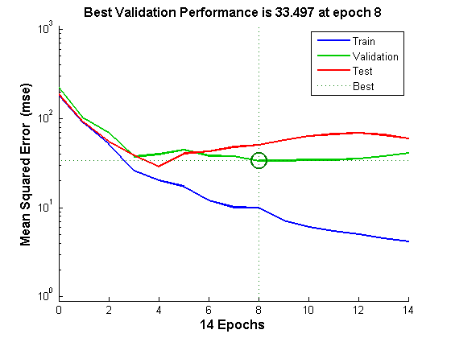
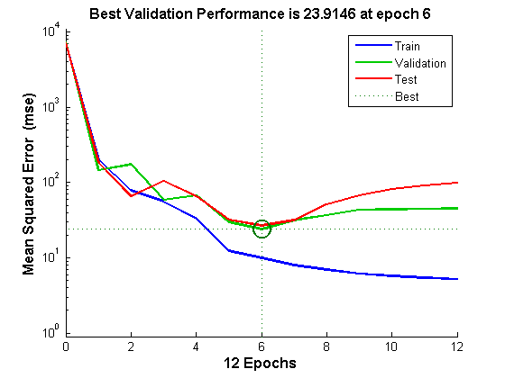
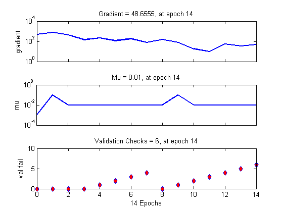
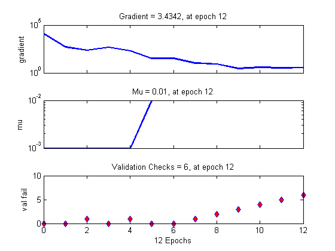
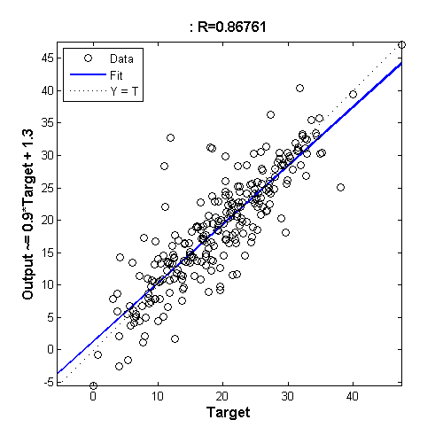
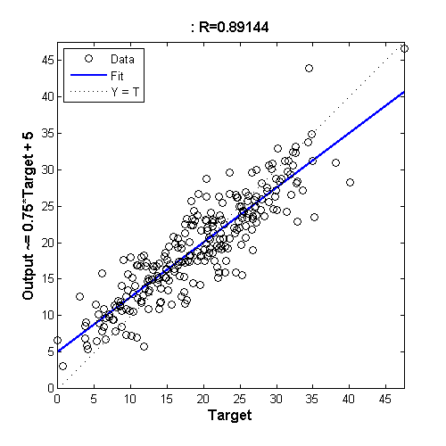
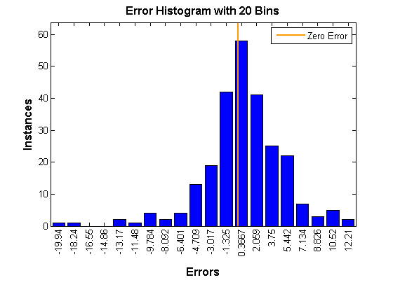
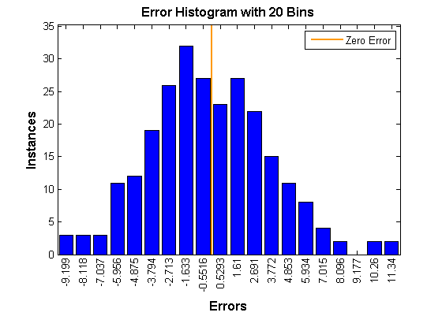

Contents
Matlab神经网络43个案例分析
清空环境变量
clear all
clc
warning off
打开matlabpool
matlabpool open
poolsize=matlabpool('size');
Starting matlabpool using the 'local' profile ... connected to 2 workers.
加载数据
load bodyfat_dataset
inputs = bodyfatInputs;
targets = bodyfatTargets;
创建一个拟合神经网络
hiddenLayerSize = 10;
net = fitnet(hiddenLayerSize);
指定输入与输出处理函数(本操作并非必须)
net.inputs{1}.processFcns = {'removeconstantrows','mapminmax'};
net.outputs{2}.processFcns = {'removeconstantrows','mapminmax'};
设置神经网络的训练、验证、测试数据集划分
net.divideFcn = 'dividerand';
net.divideMode = 'sample';
net.divideParam.trainRatio = 70/100;
net.divideParam.valRatio = 15/100;
net.divideParam.testRatio = 15/100;
设置网络的训练函数
net.trainFcn = 'trainlm';
设置网络的误差函数
net.performFcn = 'mse';
设置网络可视化函数
net.plotFcns = {'plotperform','plottrainstate','ploterrhist', ...
'plotregression', 'plotfit'};
单线程网络训练
tic
[net1,tr1] = train(net,inputs,targets);
t1=toc;
disp(['单线程神经网络的训练时间为',num2str(t1),'秒']);
单线程神经网络的训练时间为0.93209秒
并行网络训练
tic
[net2,tr2] = train(net,inputs,targets,'useParallel','yes','showResources','yes');
t2=toc;
disp(['并行神经网络的训练时间为',num2str(t2),'秒']);
Computing Resources:
Parallel Workers:
Worker 1 on Wang_Matlab, MEX on PCWIN
Worker 2 on Wang_Matlab, MEX on PCWIN
Lab 1:
Training with TRAINLM.
Epoch 0/1000, Time 0.096, Performance 7115.2407/0, Gradient 12833.5776/1e-07, Mu 0.001/10000000000, Validation Checks 0/6
Epoch 12/1000, Time 0.397, Performance 5.1658/0, Gradient 3.4342/1e-07, Mu 0.01/10000000000, Validation Checks 6/6
Training with TRAINLM completed: Validation stop.
并行神经网络的训练时间为2.2013秒
网络效果验证
outputs1 = sim(net1,inputs);
outputs2 = sim(net2,inputs);
errors1 = gsubtract(targets,outputs1);
errors2 = gsubtract(targets,outputs2);
performance1 = perform(net1,targets,outputs1)
performance2 = perform(net2,targets,outputs2)
performance1 =
19.6247
performance2 =
14.5379
神经网络可视化
figure, plotperform(tr1);
figure, plotperform(tr2);
figure, plottrainstate(tr1);
figure, plottrainstate(tr2);
figure,plotregression(targets,outputs1);
figure,plotregression(targets,outputs2);
figure,ploterrhist(errors1);
figure,ploterrhist(errors2);
matlabpool close
Sending a stop signal to all the workers ... stopped.
       